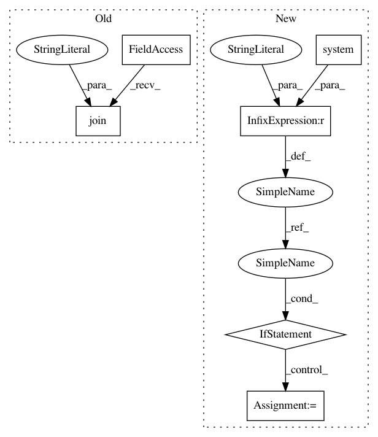

f7a8a023870f3218c02c6f5940b258b49ebeb507,video_to_slomo.py,,create_video,#Any#,77
Before Change
def create_video(dir):
error = ""
print("{} -r {} -i {}/%d.png -vcodec ffvhuff {}".format(os.path.join(args.ffmpeg_dir, "ffmpeg"), args.fps, dir, args.output))
retn = os.system("{} -r {} -i {}/%d.png -vcodec ffvhuff "{}"".format(os.path.join(args.ffmpeg_dir, "ffmpeg"), args.fps, dir, args.output))
if retn:
error = "Error creating output video. Exiting."
After Change
return error
def create_video(dir):
IS_WINDOWS = "Windows" == platform.system()
if IS_WINDOWS:
ffmpeg_path = os.path.join(args.ffmpeg_dir, "ffmpeg")
else:
ffmpeg_path = "ffmpeg"
error = ""
print("{} -r {} -i {}/%d.png -vcodec ffvhuff {}".format(ffmpeg_path, args.fps, dir, args.output))
retn = os.system("{} -r {} -i {}/%d.png -vcodec ffvhuff "{}"".format(ffmpeg_path, args.fps, dir, args.output))
if retn:
In pattern: SUPERPATTERN
Frequency: 3
Non-data size: 6
Instances
Project Name: avinashpaliwal/Super-SloMo
Commit Name: f7a8a023870f3218c02c6f5940b258b49ebeb507
Time: 2020-08-20
Author: 42113029+tamasino52@users.noreply.github.com
File Name: video_to_slomo.py
Class Name:
Method Name: create_video
Project Name: tgsmith61591/pmdarima
Commit Name: 5496637ebbd60082df146d540e66ccb9751e177e
Time: 2018-12-24
Author: drotarcharles@yahoo.com
File Name: pmdarima/arima/tests/test_arima_diagnostics.py
Class Name:
Method Name:
Project Name: avinashpaliwal/Super-SloMo
Commit Name: f7a8a023870f3218c02c6f5940b258b49ebeb507
Time: 2020-08-20
Author: 42113029+tamasino52@users.noreply.github.com
File Name: video_to_slomo.py
Class Name:
Method Name: extract_frames